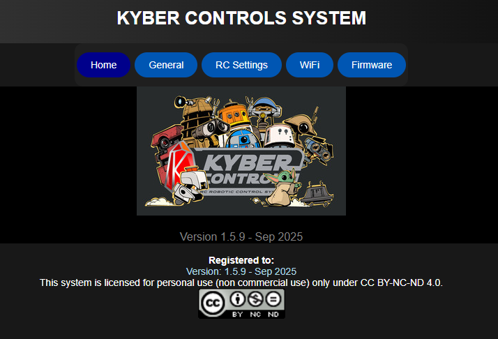
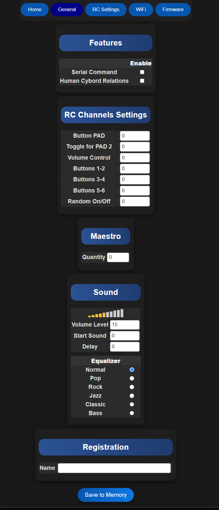
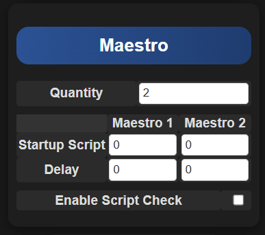
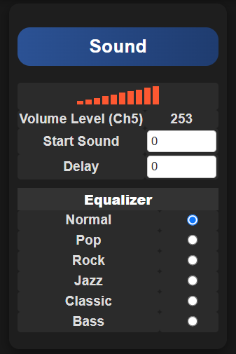
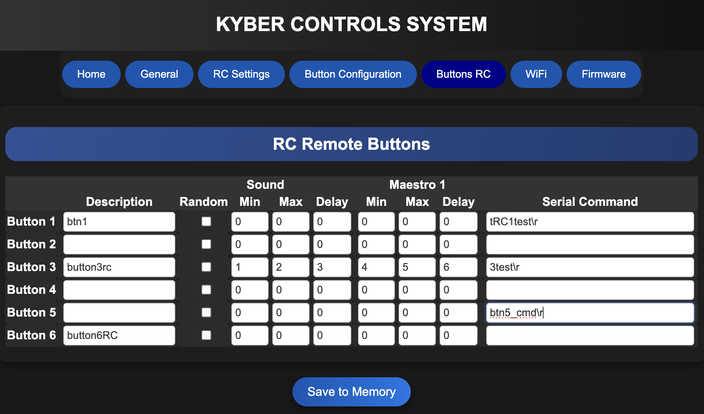
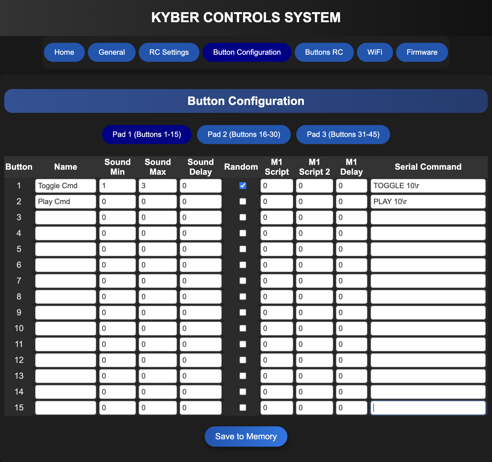
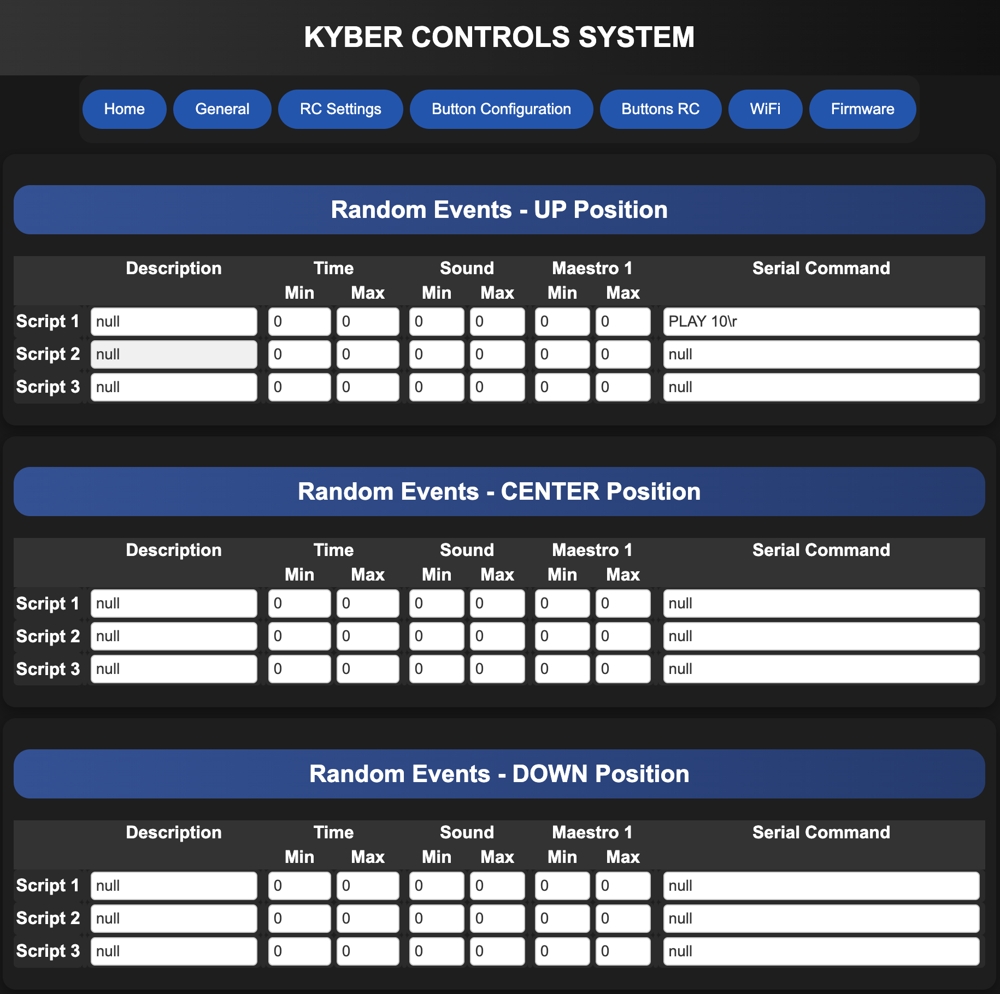
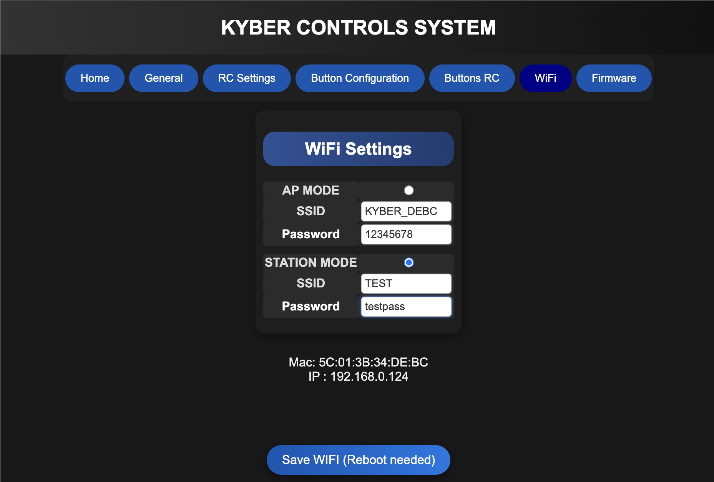
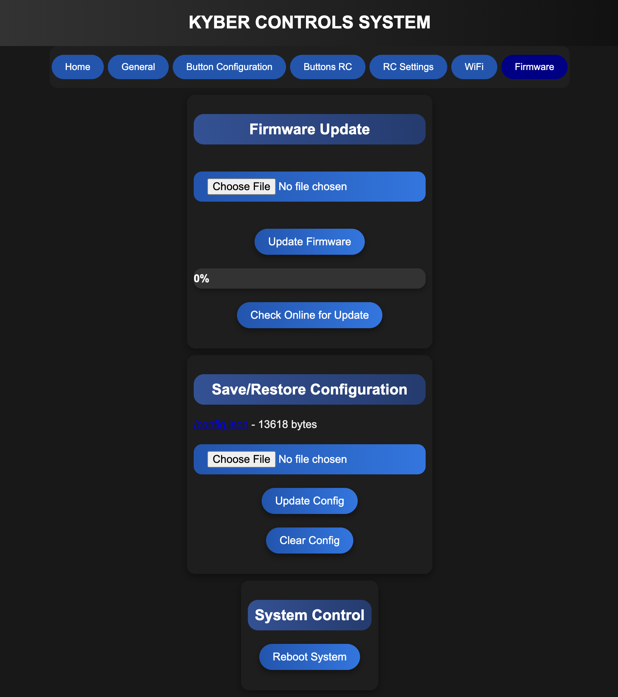

Web Interface¶
The Kyber Control System provides a powerful web-based interface for configuration. The interface is designed to be intuitive and responsive, allowing you to configure your system from any supported web browser.

Interface Overview
Top menu provides quick access to all major functions of the system.
The web interface will adjust dynamically to your configuration.
Browser Compatibility¶
The web interface is officially supported on:
- Google Chrome (Recommended)
- Internet Explorer
- Safari
Browser Recommendation
For the best experience, we recommend using Google Chrome as it provides optimal performance and compatibility.
General Page¶
The General Page is where you do basic configuration of the Kyber Controller

Features
Serial Command¶
Enables sending commands via the serial port "Marcduino on the Kyber Board" to any devices that support this type of connexion.
Human Cyborg Relations (HCR)¶
When enabled and saved, this will add HCR configuration menu in General page. Connexion to the HCR will be with the same Serial port "Marcduino".
RC Channels Settings
Button PAD¶
Enter RC channel for the External Button PAD or Kyberpad.
Toggle for PAD 2¶
Enter RC channel to switch between Button PAD 1 and PAD 2. This will be set on a 2 position toggle switch.
Volume Control¶
Enter RC channel to control volume. This will be set on a slider or POT on the remote.
Buttons 1-2 3-4 5-6¶
Enter RC channel to act like a set of 2 buttons. This wil be set on a 3 positions toggle switch for each channels. (See Buttons RC section)
Random On/Off¶
Enter RC channel to enable Random sounds and events. This will be set on a 3 positions toggle switch. (See Random Section for more Info)
Maestro
Quantity¶
Enter how many Maestro you will be using. Kyber support up to 2 Maestro, from 6 to 24 channels.
Sound
Volume Level¶
If no RC channel is set for Volume Control, you can manually adjust Volume level from 0 to 30.
Start Sound¶
Will be played after the Kyber boot sequence is finished.
Delay¶
Add a delay before playing Start Sound.
Equalizer¶
Set the Equalizer to your liking. This is a feature built in the DFPlayer and cannot be adjusted manually.
Registration
Add the name of your droid or your own name. This will be displayed on the web interface footer.

Human Cyborg Relation (HCR) menu
Set a RC channel to control HCR volume. You can use the same channel for all 3. Set an offset to adjust the sound level for each HCR channels. Set a startup Scrip to send a command to HCR when the Kyber boot. Set a delay before sending the startup script.

Maestro menu
Startup Script¶
Will be played on Maestro 1 and/or 2 when the Kyber boot.
Delay¶
Set a delay to postpone the script.
Enable Script Check¶
Check if a script is already running before starting a new one. When enabled, if a script is already running, new script will not start.

Sound menu
If RC channel is set for Volume Control, sound level will be displayed depending on the slider/pot position. All other settings stay the same.
Save to Memory
Do not forget to save to memory when you change a setting. Change will be lost if you click on top menu.
RC Channels¶

The RC Channels panel provides precise control over your servo channels:
- Real-time position control
- Channel status monitoring
- Individual channel configuration
- Quick position adjustments
Button Controls¶

The button control interface allows for: - Quick preset positions - Customizable button actions - Instant command execution - Sequence triggering
Random Movement¶

The random movement feature enables: - Automated position changes - Customizable movement ranges - Timing control - Pattern generation
Configuration¶
General Settings¶
The general settings panel allows you to configure: - System preferences - Default values - Operation modes - Interface options
WiFi Configuration¶

The WiFi configuration panel provides: - Network setup - Connection management - Security settings - Signal strength monitoring
Firmware Management¶

The firmware section enables: - System updates - Version management - Update history - System recovery options
Mobile Interface¶

The interface automatically adapts to mobile devices:
- Touch-Optimized Controls
- Large touch targets
- Swipe gestures
- Pull-to-refresh
-
Touch-friendly sliders
-
Mobile Layout
- Compact navigation
- Collapsible panels
- Quick action buttons
- Optimized performance
Mobile Usage
When using a mobile device:
- Use landscape orientation for better control
- Enable screen rotation lock for stability
- Use two-finger gestures for precise adjustments
- Consider using a tablet for complex operations
Keyboard Shortcuts¶
| Key Combination | Action |
|---|---|
| Space | Emergency Stop |
| Arrow Up/Down | Fine Position Adjust |
| 1-9 | Select Channel |
| Ctrl + S | Save Settings |
| Ctrl + P | Play Sequence |
Questions for Clarification¶
For Project Owner
- What is the default web interface port?
- Are there different user access levels?
- What browsers are officially supported?
- Should we include custom UI customization instructions?
- Are there mobile apps available?
Accessing the Interface¶
Local Access¶
- Open a supported web browser
- Navigate to
http://localhost:8080(default address) - The interface will load automatically (no login required)
Default Port
The default port is 8080. If you need to change this, you can modify it in the system settings.
Remote Access¶
To access your Kyber Control System from outside your local network:
- Configure port forwarding on your router:
- Forward port 8080 (or your custom port) to your Kyber system
-
Use TCP protocol
-
Access via external IP:
- Find your external IP address
- Use
http://your-external-ip:8080
Security Notice
When enabling remote access:
- Use a firewall to restrict access
- Consider using a VPN for secure remote connections
- Regularly update your system firmware
Custom Title
This is a note admonition. The title is optional.
Abstract
Also known as "summary" or "tldr"
Info
Additional information
Tip
Also known as "hint" or "important"
Success
Also known as "check" or "done"
Question
Also known as "help" or "faq"
Warning
Also known as "caution" or "attention"
Failure
Also known as "fail" or "missing"
Danger
Also known as "error"
Bug
Report a bug
Example
An example
Quote
Also known as "cite"